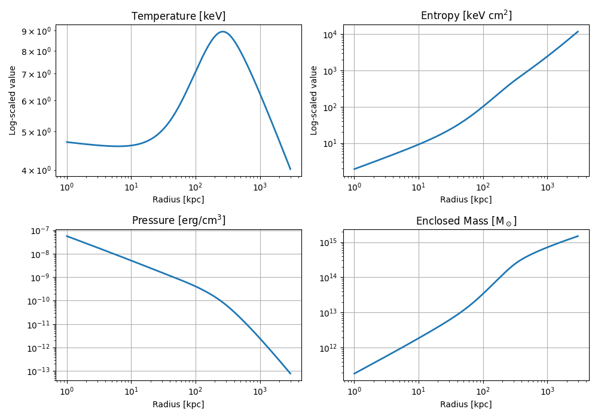

Note
Go to the end to download the full example code.
Build a Galaxy Cluster From Temperature and Density#
This example demonstrates how to build a spherical galaxy cluster model from an analytic
temperature profile and a gas density profile using the .from_temperature_and_density
constructor.
The temperature structure is defined using the Vikhlinin profile, and the gas density is modeled using an NFW profile. This method is especially useful when observational temperature data is available and you want to self-consistently compute pressure and entropy under hydrostatic equilibrium.
Setup#
We’ll use the following classes:
import tempfile
import matplotlib.pyplot as plt
import numpy as np
import unyt
from pisces.models.galaxy_clusters import SphericalGalaxyClusterModel
from pisces.profiles import NFWDensityProfile, VikhlininTemperatureProfile
Define Profiles#
The gas density follows an NFW profile, and the temperature profile is defined using the Vikhlinin model, which captures observed temperature structure in clusters.
# Gas density profile parameters
rho_gas_0 = unyt.unyt_quantity(5e5, "Msun/kpc**3")
r_s_gas = unyt.unyt_quantity(220, "kpc")
# Create the gas density profile
gas_density = NFWDensityProfile(rho_0=rho_gas_0, r_s=r_s_gas)
# Vikhlinin temperature profile parameters
T_0 = unyt.unyt_quantity(11.06, "keV") # Central temperature
r_t = unyt.unyt_quantity(270, "kpc") # Transition radius
a = 0.02
b = 5
c = 0.4
T_min = 0.38 * T_0
r_cool = unyt.unyt_quantity(129, "kpc") # Cooling radius
a_cool = 1.6
# Construct the temperature profile
temperature = VikhlininTemperatureProfile(
T_0=T_0,
r_t=r_t,
a=a,
b=b,
c=c,
T_min=T_min,
r_cool=r_cool,
a_cool=a_cool,
)
Construct the Model#
We’ll construct the full spherical cluster model using the temperature and density profiles.
# Output location
tmpdir = tempfile.TemporaryDirectory()
filename = f"{tmpdir.name}/cluster_temp_dens_model.h5"
# Radial range and resolution
rmin = unyt.unyt_quantity(1.0, "kpc")
rmax = unyt.unyt_quantity(3.0, "Mpc")
# Create the model
model = SphericalGalaxyClusterModel.from_temperature_and_density(
gas_density,
temperature,
filename=filename,
min_radius=rmin,
max_radius=rmax,
num_points=500,
overwrite=True,
)
Prepare metadata, profiles, and fields...: 0%| | 0/8 [00:00<?, ?it/s]
Creating grid...: 12%|█▎ | 1/8 [00:00<00:00, 79137.81it/s]
Building profile fields...: 25%|██▌ | 2/8 [00:00<00:00, 2190.24it/s]
Computing gravitational field...: 38%|███▊ | 3/8 [00:00<00:00, 674.51it/s]
Computing Mass Profiles...: 50%|█████ | 4/8 [00:00<00:00, 760.73it/s]
Computing potential...: 62%|██████▎ | 5/8 [00:00<00:00, 272.50it/s]
Computing potential...: 88%|████████▊ | 7/8 [00:01<00:00, 6.49it/s]
Performing additional computations...: 88%|████████▊ | 7/8 [00:01<00:00, 6.49it/s]
COMPLETE: 88%|████████▊ | 7/8 [00:01<00:00, 6.49it/s]
Visualize Profiles#
We’ll plot the radial structure of the cluster: temperature, pressure, entropy, and enclosed mass.
fields = ["temperature", "entropy", "pressure", "total_mass"]
units = ["keV", "keV*cm**2", "erg/cm**3", "Msun"]
labels = {
"temperature": r"Temperature [$\mathrm{keV}$]",
"entropy": r"Entropy [$\mathrm{keV\ cm^2}$]",
"pressure": r"Pressure [$\mathrm{erg/cm^3}$]",
"total_mass": r"Enclosed Mass [$\mathrm{M_\odot}$]",
}
radii = model.grid["r"].to("kpc").value
fig, axes = plt.subplots(2, 2, figsize=(10, 7))
axes = axes.flatten()
for ax, field, unit in zip(axes, fields, units):
values = model[field].to_value(unit)
ax.plot(radii, values, lw=2)
ax.set_yscale("log")
ax.set_xscale("log")
ax.set_title(labels[field])
ax.set_xlabel("Radius [kpc]")
ax.grid(True)
axes[0].set_ylabel("Log-scaled value")
axes[1].set_ylabel("Log-scaled value")
plt.tight_layout()
plt.show()

Total running time of the script: (0 minutes 2.300 seconds)